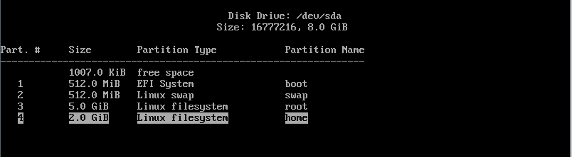

Arch Linux installation notes
This is a re-write of my old Arch Linux installation notes. Originally they were just on different text files on my github repo and they became too hard to read at some point so I decided to combine these notes to a proper blog post. The blog post was originally created to my old wordpress website a couple of years ago. Decided I would migrate this to here as well.
Table of contents:
- 1 VirtualBox setup
- 2 Starting Arch Linux virtual machine
- 3 Setting up network connection
- 4 Setup disk partitions
- 5 System setup
- 6 Configure network
- 7 Install sound
- 8 Install display server
- 9 Install desktop environment
- 10 TLDR
Requirements:
- Time and patience.
- Virtual machine ( or why not a real machine )
- Arch Linux image
- 1GB RAM
- 8GB free hard disk space
Steps:
- Install VirtualBox
- Install Arch Linux
- ???
- Profit
Easy, huh? So lets begin by installing the virtual machine so we can actually launch the Arch Linux!
Download:
- https://www.virtualbox.org/wiki/Downloads
- https://www.archlinux.org/download/
{kind=link}
VirtualBox setup
- Click New
- Select the 64-bit Arch Linux and select a machine folder
- Allocate RAM for the virtual machine. Recommended 1024MB should be enough.
- Create a virtual hard disk
- Select hard disk file type: VDI
- Set the storage as dynamically allocated so that it won’t reserve the whole space immediately.
- Type the name for the Virtual disk and allocate the size.Recommended 8GB is just fine for messing around with virtual machine
Now the virtual machine has been setup and the virtual machine is ready to be started. Click Start, select 64-bit Arch Linux as a start-up disk and click Start.
Virtual machine setup notes:
- If you lose your mouse on VirtualBox, click right Ctrl
- You can scroll up/down the terminal window with Shift + PageUp/PageDown
- If you get stuck in scaled mode: click right Ctrl + C
- Exit full screen mode right Ctrl + F
Now on to the sweet Arch Linux installation part.

Starting Arch Linux virtual machine
2.1 Click Boot Arch Linux ( x86_64 ). After Linux boots up, you should be sitting at root@archiso shell.
2.2 ( Optional ) set the keyboardlayout temporarily to finnish. ( Or whatever your language is. Default is english )
2.3 Check the network connection by pinging a google server 2.4 If your connection works, skip to step 4.Setting up network connection
3.1 Check the ethernet card status and the drivers it uses. Command lists information about PCI buses and devices. Scroll up and search for Ethernet controller portion.
3.2 To search for Ethernet part, and print 10 lines after that:Kernel driver in use: e1000 – This is your card’s driver
{kind=link}
3.3 Now we can search for the driver in the kernel message buffer to see if it is up.
Output should look something like this, when the card is up and running:

3.4 If the driver is not in use, we need to load the driver. replace [ e1000 ] with your driver shown in lspci.
Throw in another ping to google server to test the connection. I have successfully fixed my connection issues this way a few times whenever I have started a fresh Arch install.Of course there are many possible reasons why the connection is not working, especially wireless connection, but this is all that I have documented on my notes. If this doesn’t help, some googling is required to go forward I’m afraid.
Setup disk partitions
4.1 Check the disk name:
{kind=link}
4.2 Open the partitioning tool:
4.3 Create a boot partition:
Note! Consider allocating more memory than 5GB for the root file system
4.4 Create a swap partition:
4.5 Create a root partition:
4.6 Create a home partition:
4.7 At this point the partitioning is done and just needs to be written to the disk:
4.8 Check that the partition table got written to the disk correctly:
 Partition table should look something like this.
{kind=link}
4.9 Format the partitions
Create boot:
Create swap:
Turn swap on:
Create root partition:
Create home partition:
Create /mnt directory:
Mount root to /mnt:
Create boot directory:
Create home directory:
Create home directory:
Mount sda1 to boot directory:
Mount sda4 to home directory:
System setup
5.1 Install the system:
Press enter to all of the questions ( to install all packages )5.2 Generate fstab file:
Fstab-file can be used to define what disks / partitions are going to be mounted to the filesystem.5.3 Check that the 4 newly created partitions exists in fstab-file:
 Fstab should look something like this.
Fstab should look something like this.
5.4 Chroot to /mnt.
5.5 Generate locale files:
Uncomment en_US-UTF-8:ProTip: Press Ctrl + W and search for “en_US”
5.6 Generate files:
5.7 Setup language:
Create locale.conf and put en_US.UTF as default language
Export language:
5.8. Setup time
Set the timezone:
Setup hardware clock:
5.9 Setup package manager:
* Uncomment [multilib] and Include below it * Add to the end of the file:Pacman.conf should look something like this.
{kind=link}
5.10 Update the system.
5.11 Setup users and passwords.
Set the hostname and password:
Add the new user to group ‘wheel’:
Enable sudo for user:
Remove #-sign from #%wheel ALL=(ALL) ALL Visudo should look something like this.
Visudo should look something like this.
Setup root password:
5.12 ( Optional ) Skip if you are not booting in EFI-mode. ( If you followed the VirtualBox tutorial, skip this part. )
Check that EFI variables are mounted:
Install EFI to boot:
5.13 Configure bootloader:
Create a folder for conf file:
[ -p ] -tag creates folders recursivelyOpen and create a conf file:
* Type to the file:title Arch Linux
linux /vmlinuz-linux
initrd /intel-ucode.img # ( if PC has an Intel CPU )
initrd /initramfs-linux.img
options root=/dev/sda3 rw
 Bootloader configuration file should look something like this.
Bootloader configuration file should look something like this.
5.14 Setup bootloader.
( Optional ) Install intel microcodes if you have Intel CPU:
Install bootloader:
( Optional ) If bootloader installing fails and you have booted in EFI mode:
pacman -Sy efibootmgr
grub-install --target=x86_64-efi --efi-directory=/boot --bootloader-id=grub --recheck
Install bootloader to harddrive:
Note!
Here I actually got my first error:
grub-install: warning: this GPT partition label contains no BIOS Boot Partition; embedding won’t be possible.
Grub-install: warning: Embedding is not possible. GRUB can only be installed in this setup by using blocklists. However, blockists are UNRELIABLE and their use is discouraged..
grub-install: error: will not proceed with blocklists.
Create a init ramdisk file for temporary root file system during startup:
Create a grub config-file:
Exit chroot:
Unmount the drive:
Reboot the system:
5.15 Boot up the system
Open the bootloader from the menu:
 Arch Linux boot menu
Arch Linux boot menu
{kind=link}
 You should be sitting at login prompt.
You should be sitting at login prompt.
Login with the username and password that you configured earlier. And once you log in, you can see that there is not much going on, just a black terminal window. Now we just need to install a GUI.
{kind=link}
Congratulations! You have just installed Arch Linux!
At this point some more steps are going to be needed so that the Arch Linux build would be useful for anything, like installing sound and graphical user interface.
 
Configure network
Network needs to actually be re-configured, because the network setup during install has no effect on the actual system.
{kind=link}
Once again, check the name of the network driver:
{kind=link}
Check the network interface name from the dmesg output:
{kind=link}
So my interface name is enp0s3. Now it needs to be configured to the DHCP client
{kind=link}
To make the fix permanent, we need to enable the dhcpcd service, so that we have a network connection at startup.
Now the network should be back up, try to ping google servers once again:
{kind=link}
Install net-tools to get ifconfig working:
Run ifconfig to see network information:
{kind=link}
 
Install sound
Install sound card drivers ( ALSA ):
 
Install display server
- Choose 1: libglvnd ( These containt the latest drivers from the official repo. )
- Press Y
Install 3D acceleration:
Choose the correct driver:
| Manuf | Driver | If 64bit |
|---|---|---|
| AMD/ATI | xf86-video-ati | lib32-ati-dri |
| Intel | xf86-video-intel | lib32-intel-dri |
| Nvidia | xf86-video-nouveau | lib32-nouveau-dri |
Install graphics card drivers:
Install touchpad drivers, if you have a laptop:
 
Install desktop environment
Choose one from the wiki:
https://wiki.archlinux.org/index.php/desktop_environment.
I usually go with the Xfce4.
Click enter to all prompts ( defaults )
Configure desktop environment:
To load your keyboard layout add before exec line: ( change the fi to your language )
Add line to the end of the file: ( Replace startxfce4 with your DE. for example startlxde )
Edit bash profile file:
Add line to the end of the file:
Now the Desktop Environment has been set up. You can run the DE by running:
Keyboard layout hasn’t been loaded yet, the system needs to be rebooted once for the keyboard layout to take effect.
Install fonts:
 
Once again, Congrats!
You should now have a working Arch Linux installation with GUI and everything. I might do some follow up articles for the Arch Linux installation, for example customizing Xmonad Desktop Environment.
{kind=link}
Now that I have everything setup, the root partition is taking 63% of the allocated 5GB size. You really might want to allocate a lot more for the partitions.
{kind=link}
Notes:
If you get stuck on login screen ( X server crashing ):
Press Ctrl + ALT + F2 so you can go to reconfigure ~/.xinitrc for example # (F1 - F7) F1 has the X server running.
 
TLDR
These are my raw notes, terminology might not be 100% correct, might contain more typos etc.
1. loadkeys fi
2. ping google.com
if network is not working try:
- lspci -v: search for ethernet driver name for example 'tg3'
-dmesg | grep tg3:
if driver is down run:
- rmmod tg3
- modprobe tg3
3. fdisk -l # check the harddrive name for the next command
4. gdisk /dev/sda # *possibly not needed*
---------------- THIS IS FOR SSD DRIVES -------------------
----- Use alternative (cfdisk) below if you have HDD ------
5. cgdisk
- new 1gb boot section (EF00) # 1024MiB
- new (half of ram) sized swap (8200) # 2048MiB
- new 20gb root (8300) # 20000MiB
- new rest of the space sized home (8300) # the rest of the space
type lsblk to check partition names
6. mkfs.fat -F32 /dev/sda1 # create boot
7. mkswap /dev/sda2 # create swap
8. swapon /dev/sda2 # turn swap on
9. mkfs.ext4 /dev/sda3 # create root partition
10. mkfs.ext4 /dev/sda4 # create home partition
11. mkdir /mnt # create /mnt directory
12. mount /dev/sda3 /mnt # mount root to /mnt
13. mkdir /mnt/boot
14. mkdir /mnt/home
15. mount /dev/sda1 /mnt/boot
16. mount /dev/sda4 /mnt/home
(5. alternaitve) cfdisk /dev/sda
- delete all existing partitions
- create new partition sized half of your ram size
- set type to primari and linux swap
- create new partition with the remaining disk space
- set type to primary and linux bootable
- hit write
- mkfs.ext4 /dev/sda2 # format to ext4
- mount /dev/sda2 /mnt # mount root
- mkswap /dev/sda1 # make swap partition
- swapon /dev/sda1 # init swap partition
17. cp /etc/pacman.d/mirrorlist /etc/pacman.d/mirrorlist.backup # create a backup of the mirrorlist
18. sed -i 's/^#Server/Server/' /etc/pacman.d/mirrorlist.backup # uncomments all the servers in the mirrorlist.backup
19. rankmirrors -n 6 /etc/pacman.d/mirrorlist.backup > /etc/pacman.d/mirrorlist # ping through the mirrors
#in mirrorlist.backup and stdout them into real mirrorlist (this will take about 5-10minutes)
20. pacstrap -i /mnt base base-devel # install arch linux base and base-devel packages (install all)
21. genfstab -U -p /mnt >> /mnt/etc/fstab # generate fstab file
22. nano /mnt/etc/fstab # cheack that the 4 partitions exists in here. Or 2 if you used the alternative partitioning example.
23. arch-chroot /mnt # chroot into /mnt
24. nano /etc/locale.gen # uncomment en_US-UTF8
25. locale-gen # generate locale files
26. echo LANG=en_US.UTF-8 > /etc/locale.conf # create locale.conf and put en_US.UTF as default language
27. export LANG=en_US.UTF-8
28. nano /etc/vconsole.conf
# write in the file:
#KEYMAP=fi
#FONT=Lat2-Terminus16
29. ls /usr/share/zoneinfo/Europe/ # check that Helsinki is in the folder
30. ln -s /usr/share/zoneinfo/Europe/Helsinki /etc/localtime # set timezone
31. hwclock --systohc --utc
32. echo <hostname> > /etc/hostname
33. nano /etc/pacman.conf
# uncomment [multilib] and Include below it
# add to the end of the file:
[archlinuxfr]
SigLevel = Never
Server = http://repo.archlinux.fr/$arch
34. pacman -Syu # update system
35. pacman -S yaourt # install user repository package
36. passwd # setup new root password
37. useradd -m -g users -G wheel -s /bin/bash <username> # add new user to group 'wheel'
38. EDITOR=nano visudo # enable sudo for user. Remove #-sign from #%wheel ALL=(ALL) ALL
39. passwd <user> # change newly created user password
40. pacman -S bash-completion # helps complete package names in the shell
----------------------------------------------------
----- SKIP IF YOU ARE NOT INSTALLING FROM EFI ------
----------------------------------------------------
41. mount -t efivarfs efivarfs /sys/firmware/efi/efivars # check that EFI variables are mounted
42. bootctl --path=/boot install # install EFI to boot
----------------------------------------------------
----------------------------------------------------
----------------------------------------------------
43. nano /boot/loader/entries/arch.conf
# type to the file:
title Arch Linux
linux /vmlinuz-linux
initrd /intel-ucode.img # if pc has intel cpu
initrd /initramfs-linux.img
options root=/dev/sda3 rw
44. pacman -S intel-ucode # if pc has intel cpu
45. pacman -S grub-bios # download bootloader
if this doesnt work try:
pacman -Sy efibootmgr
grub-install --target=x86_64-efi --efi-directory=/boot --bootloader-id=grub --recheck
46. grub-install /dev/sda # install bootloader to harddrive
47. mkinitcpio -p linux # create init file for root
48. exit
49. grub-mkconfig -o /boot/grub/grub.cfg # create grub config file
50. umount /mnt # unmount the drive
51. reboot
 
Created: 2023-03-30